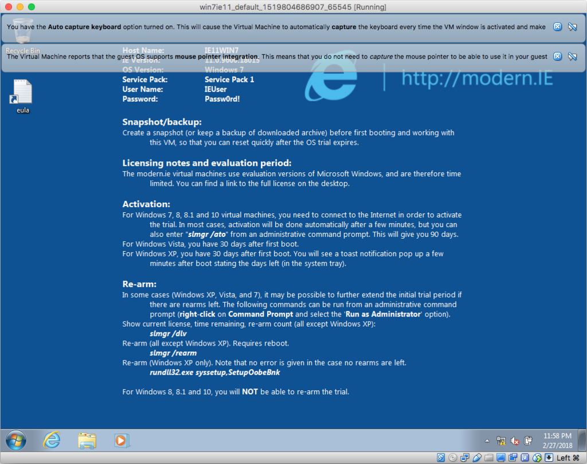

Vagrant で Mac 上に Windows の仮想環境を構築する
MacOS Sierra 上に、VirtualBox + Vagrant を利用して、Windows7 の仮想環境を構築してみようと思う。
目次
- VirtualBox をインストールする
- Vagrant をインストールする
- Windows イメージをダウンロードする
- Vagrant Box を登録する
- Vagrantfile を設定する
- Vagrant で起動する
- 共有フォルダ設定をしてみる
- Windows を日本語化してみる
- 完了
VirtualBox をインストールする
まずは、Vagrant で操作する VirtualBox をインストールする。
検証時は v5.2.6 だったが、現在は v5.2.8 が出ている模様。VirtualBox-5.2.6-120293-OSX.dmg をダウンロードしてインストールする。
Vagrant をインストールする
次に Vagrant をダウンロード。
執筆時点のバージョンは v2.0.2 だった。vagrant_2.0.2_x86_64.dmg を開いてインストールする。
Windows イメージをダウンロードする
仮想環境を扱うための準備ができたので、Windows OS のイメージを用意しよう。
Windows OS のイメージをどうやって手に入れるかだが、Microsoft がブラウザのテスト用に、90日間の使用制限付きだが無料でイメージを提供してくれている。コレを利用しよう。
元は「Modern.IE」というプロジェクト名で管理していたものなので、他の文献を探す時は「Modern.IE」といった文言を含めて検索すると色々見付かるかと。
現在は以下のページからダウンロードできる。
このサイトでダウンロードできる環境は以下のとおり。
- IE8 on Win7 (x86)
- IE9 on Win7 (x86)
- IE10 on Win7 (x86)
- IE11 on Win7 (x86)
- IE11 on Win81 (x86)
- MSEdge on Win10 (x64) Stable (16.16299)
- MSEdge on Win10 (x64) Preview (17.17074)
このうち、今回は IE11 on Win7 (x86) を利用する。
イメージの種類もいくつか選べる。
- VirtualBox
- Vagrant
- HyperV (Windows)
- Parallels (Mac)
今回は Vagrant を選択し、Vagrant Box をダウンロードする。
ファイルは 4GB 超。IE11.Win7.Vagrant.zip がダウンロードできたら解凍…しようと思ったが、どうも「その操作は許可されていません」というエラーが出てしまい解凍できない。仕方がないので App Store より StuffIt Expander というフリーソフトをインストールして、コレを使って解凍した。
解凍して IE11 - Win7.box というファイルが取り出せた。スペース等が入っていてコマンドラインで扱いづらいので、Win7IE11.box とリネームしておく。
Vagrant Box を登録する
適当な作業ディレクトリを用意し、先程の Win7IE11.box を格納しておく。ターミナルでそのディレクトリに移動し、Vagrant Box を登録する。
# 指定した Vagrant Box ファイルを「win7ie11」という名前で登録する
$ vagrant box add ./Win7IE11.box --name win7ie11
==> box: Box file was not detected as metadata. Adding it directly...
==> box: Adding box 'win7ie11' (v0) for provider:
box: Unpacking necessary files from: file:///Users/Neo/vms/Win7IE11.box
==> box: Successfully added box 'win7ie11' (v0) for 'virtualbox'!
Vagrantfile を設定する
次に、Vagrantfile を生成して、各種設定を書き込んでおく。
# Vagrantfile を生成する
$ vagrant init
生成された Vagrantfile をテキストエディタで開き、内容を以下のとおり直す。
Vagrant.configure("2") do |config|
# VirtualBox の設定
config.vm.provider "virtualbox" do |vb|
vb.gui = true
vb.memory = "2048"
end
# 使う Vagrant Box 名
config.vm.box = "win7ie11"
# ゲストの OS を指定しておかないとマウント設定などがうまく行かない
config.vm.guest = "windows"
# ユーザ名
config.ssh.username = "IEUser"
# パスワード
config.ssh.password = "Passw0rd!"
# ゲストに SSH 鍵を配置しない (false)
config.ssh.insert_key = false
# SSH ログインシェルを変更しておく
config.ssh.shell = 'sh -l'
# Windows に sudo の概念がないので空白に直しておく
config.ssh.sudo_command = ''
# 共有フォルダ (以下の設定だと無効)
config.vm.synced_folder ".", "/vagrant", disabled: true
# 有効にするには以下に書き換える (後述)
# config.vm.synced_folder "./vagrant", "c:\\vagrant"
end
設定内容は以下のサイトの受け売り。
Microsoft が配布するイメージの「ユーザ名/パスワード」は、IEUser/Passw0rd! になっている。ログオン時に利用することもあるので覚えておこう。
Vagrant で起動する
設定が終わったので、いよいよ Vagrant で起動してみる。
# Vagrant で起動する
$ vagrant up
Bringing machine 'default' up with 'virtualbox' provider...
==> default: Importing base box 'win7ie11'...
==> default: Matching MAC address for NAT networking...
==> default: Setting the name of the VM: win7ie11_default_1519804686907_65545
==> default: Clearing any previously set network interfaces...
==> default: Preparing network interfaces based on configuration...
default: Adapter 1: nat
==> default: Forwarding ports...
default: 22 (guest) => 2222 (host) (adapter 1)
==> default: Running 'pre-boot' VM customizations...
==> default: Booting VM...
==> default: Waiting for machine to boot. This may take a few minutes...
default: SSH address: 127.0.0.1:2222
default: SSH username: IEUser
default: SSH auth method: password
==> default: Machine booted and ready!
==> default: Checking for guest additions in VM...
default: The guest additions on this VM do not match the installed version of
default: VirtualBox! In most cases this is fine, but in rare cases it can
default: prevent things such as shared folders from working properly. If you see
default: shared folder errors, please make sure the guest additions within the
default: virtual machine match the version of VirtualBox you have installed on
default: your host and reload your VM.
default:
default: Guest Additions Version: 5.0.4
default: VirtualBox Version: 5.2
「Starting Windows」的な黒い画面が表示され、デスクトップ画面が表示された。

共有フォルダ設定をしてみる
とりあえず Windows 環境が開始できたので、仮想環境にデータを持ち込みやすくするため、共有フォルダを設定する。
先程の Vagrantfile があるディレクトリに、vagrant ディレクトリを作っておく。
そして Vagrantfile を開き、
config.vm.synced_folder ".", "/vagrant", disabled: true
この部分を、
config.vm.synced_folder "./vagrant", "c:\\vagrant"
と変え、$ vagrant reload で再起動する。
すると、Vagrantfile があるディレクトリに置いた vagrant ディレクトリが、C:\vagrant\ フォルダとして参照できるようになる。
起動時に警告らしきメッセージが表示されたが、特に問題なく共有フォルダが利用できている。
Windows を日本語化してみる
Windows OS のイメージは全て英語表示になっている。そのままでも使えるが、とりあえず日本語化しておく。
Windows Update を利用したりして言語パックを入れても良いが、言語パックのインストーラファイルを用意してインストールする方法をとってみる。
このサイトに従い、以下の MUI のインストーラ (KB2483139) をダウンロードする。
ゲストの Windows にファイルを移し、管理者権限で実行しインストールする。
インストールが終わったら、コントロールパネル内の設定より「日本語」を選択する。一度ログオフすると反映され、日本語表示されるようになる。
その他、以下の設定を変えておく。
- システムロケールを日本にしておく。こちらは再起動になるが、VirtualBox・Vagrant であっても自動的に再起動してくれる。
- 「日付と時刻の設定」で日本のタイムゾーンを選んでおく。
- 「テキストサービスと入力言語」で「日本語 (日本) - Microsoft IME」を選べば、日本語入力もできるようになる。
- あとは使用しているキーボードの種類に応じて、お好みで日本語配列に設定したり、キー設定しておけば OK。
完了
コレでひととおりの環境構築は完了。あとはココに好きなツールを入れて、よきところで再度 Box 化しておくと良いだろう。
$ vagrant package で、変更を入れた環境を Box 化できる。
90日間の使用期限はあるものの、環境構築を1日で済ませて Box 化しておけば、89日・およそ四半期に一度、スナップショット時点に戻すだけ。さほど困ることもないだろう。
その他参考。
- Vagrant で Windows 7 + IE8 の環境を構築する: ある SE のつぶやき
- Official Windows VM download URL archive, from https://dev.modern.ie/tools/vms/mac/ — scratch that — https://developer.microsoft.com/en-us/microsoft-edge/api/tools/vms/ · GitHub
- 【忘備録】Vagrantでローカルのboxを追加する流れ＆modern.IE使うまで | degitekunote2
- modern-ie vagrant config: 1. install virtualbox and vagrant, 2. run "vagrant up edge-Win10" or another version as listed below. · GitHub